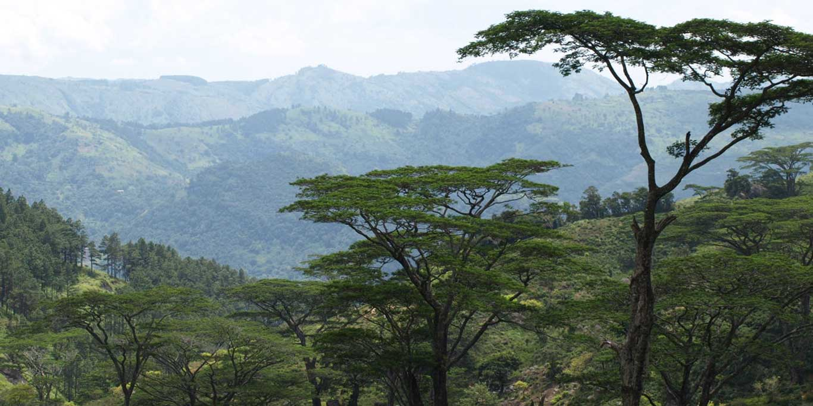

About Meemure
Meemure is a village in Sri Lanka with a population of about 400.It is located near the border between Kandy District and Matale District in the Knuckles Mountain Range. Meemure is one of the most remote villages in Sri Lanka with the only access via a 14 km (8.7 mi) trail from the town of Loolwatte.There is no cellular service available in the village,but a CDMA telephone service is available. There is no direct mail delivery to the village; a villager journeys each day to Thapal Junction to exchange incoming and outgoing postal mail with a postman